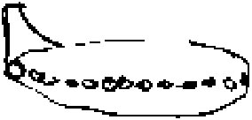

Dessin de Dorothy Lewis de l'objet quelle observa le 3

Dorothy Lewis, de Sarnia, Ontario (Canada),
repère un appareil métallique étrange dans le ciel qui dérive lentement au-dessus du lac Sinclair. L'appareil,
circulaire, a une dérive attachée, mais pas d'ailes. Elle remarque de la lumière émanant des nombreux fenêtres
d'ouverture qui parcourent le bord extérieur de l'objet, qui pivote lentement, d'avant en arrière, tout en
conservant sa partie de dérive stable. comme si celle-ci était verrouillée à cette position alors qu'il survole le
lac Lewis deviendra directrice de la section Sarnia, Ontario (Canada) du site web Virtually Strange.
Un A-12 (#125) se trouve à court de
carburant à 70 miles de Groom Lake et s'écrase. Le pilote, Ray,
s'éjecte mais ne parvient pas à se séparer de son siège et est tué McIninch.
Les sphères lumineuses observées sont à nouveau observées
depuis la même ferme de l'Aveyron (France). Le fermier, sorti s'occuper des bêtes, voit
soudain une sphère à 50 m de lui. Il décide de passer derrière la chose pour voir ce que c'était, ayant déjà
supposé qu'il y avait un devant et un derrière ; mais lorsqu'il passe la porte, la sphère est juste là et l'attend,
alors qu'elle se trouvait encore dans la cour un instant plus tôt. L'homme décide alors d'emprunter un petit chemin
à travers champs pour contourner l'objet mais la sphère le suit sur 60 m avant d'aller bloquer l'entrée du chemin :
Cette chose m'a suivi sur environ 60 m, assez près de moi... alors il y avait un petit chemin où je voulais
passer... pour faire le tour par-derrière, puis ça m'a suivi tout du long... jusqu'à ce que je m'arrête là où je
voulais la contourner, et la "machine" s'arrête aussi, juste à l'entrée du chemin. Alors j'ai dit, là, y a pas à
discuter, je peux pas passer ! Le fermier appelle alors son fils et tous deux voient 6 sphères qui leur font
si peur qu'ils rentrent immédiatement dans la maison. Le grand objet en forme d'obus est là aussi et il émet un
faisceau semblable à celui d'un phare : Il y avait un phare au-dessus, juste au bout, à droite, et il éclairait
cette fenêtre là-haut, il éclairait toute la pièce... J'avais la fenêtre ouverte en face. - Etait-ce un faisceau
diffus, ou plutôt concentré ? - Oh, concentré, très concentré. - Et il éclairait votre chambre ? - Oui, il
l'éclairait... en allant et en venant... ça tournait... ça tournait toujours. - Ca tournait en rond, comme un phare
? - Oui, quelquefois ça éclairait la fenêtre du dessous... ça continuait à tourner en rond... mais c'était là, à 11
h du soir déjà, peut-être 11 h 1/4, quelque chose comme ça. Et alors, tout d'un coup, tout s'est éteint. Tout s'est
éteint et je n'ai plus rien vu. Je ne sais pas si c'était parti ou si c'était encore làLargarde, Fernand: LDLN < Vallée, Jacques: "L'Aveyron, ou l'essence de la prophétie" in "La composante psychique", Le Collège Invisible, p. 46-50.
A Groom Lake, il est décidé de remplacer
progressivement l'activité du programme A-12 en faveur du SR-71. Le remplacement doit être totalement achevé en Janvier 1968 Peebles, Curtis, Dark Eagles, Presido Press, 1995.
En voiture, le fils du fermier voit l'obus descendre près de la maison. Il s'en approche en
voiture et constate qu'il est vraiment très grand. 2 des petites sphères y entrent, puis il devient très brillant.
Le témoin entend un sifflement. L'obus s'incline à 45° et part à une vitesse vertigineuse. Un autre objet
arrive. Il a la forme d'un disque avec 2 coupoles transparentes au sommet : A l'intérieur... il m'a semblé que
c'était éclairé comme une lumière verte... dans les deux dômes... et j'ai vu... remarquez que je ne suis pas sûr...
il faisait très sombre, on pourrait dire qu'il y avait une sorte de brouillard, dedans ou dehors... je ne sais
pas... à l'intérieur ou à l'extérieur des 2 dômes. De toute façon, j'ai cru voir 2... eh bien, j'ai vu 2 personnes
comme... des êtres humains, voyez-vous ?... des cosmonautes. Ils portaient des combinaisons d'aviateur, vertes avec
des bandes blanches. L'objet lui-même oscille sur place d'avant en arrière : - Les portes de la voitures
étaient-elles fermées pendant ce temps ? - Oui, oui... j'ai dû ouvrir la fenêtre, je crois... Ou c'était peut-être
après, quand c'est parti, que j'ai ouvert la glace... et alors j'ai senti une vague de chaleur et je me suis senti
presque... je ne pouvais bouger ni les mains ni les pieds tant que cela a duré.
Observation de la même créature volante qu'il y a 2 mois par Mme McDaniel.
Photographie prise le 12 à Baton Rouge
A Baton Rouge (Louisiane), 1 pêcheur assis sur son embarcation sur la rive Ouest de Old
River voit un objet (ci-contre) et a juste le temps de prendre une photo avant qu'il parte à un angle de 45° à très
grande vitesse. Aucun son n'est entendu.
Le vol 162 San-Francisco / Houston de la compagnie American Airlines observe un ovni
lumineux après décollage de El Paso.
A South Ashburnham (Massachusetts), Betty Andreasson
et sa famille sont visités chez eux par des lumières, puis de petites créatures semblables aux Gris. Betty est enlevée, et ne se souviendra plus de rien de
plus au sujet de cet événement avant d'entreprendre une régression sous hypnose au début de l'année 1977 (voir cette
année).
A Cap Kennedy, incendie à bord du cockpit d'Apollo 1. La température atteint 1400 °C en quelque secondes en raison de
l'inflammabilité de l'oxygène pur, et les 3 astronautes (Gus Grissom, Edward White, et
Roger Chaffee) sont asphyxiés par le monoxyde de carbone.
près du parc du zoo de Whipsnade à Studham Common (Bedfordshire, UK),
Alex Butler (10 ans), Tony Banks, Terry Cahill,
Colin Lonsdale et David Inglis jouent avant l'école qui
commence à à la Studham Lower School. Il a plu, mais le ciel s'est dégagé. Les garçons longent un
sentier piéton qui mènent à la basse vallée de Dell, un endroit entouré de buissons et des arbres, à côté de Studham
Common, un endroit idéal pour jouer à cache-cache. Pendant que les garçons bavardent, un soudain éclair de foudre
frappe tout près. Un des garçons, Butler, un peu en avant des autres, a atteint le bord
au-dessus du Dell, et se fige de surprise quand il voit une petite silhouette bleuâtre, ou un petit homme
bleu, se tenant dans une clairière près de quelques buissons, vers le bas au pied du versant opposé, à 20 m
environ de lui. Il regarde, stupéfait, la silhouette pendant un moment, puis crie pour appeler ses amis qui viennent
en courant et observent l'être avec étonnement. Après un premier moment pendant lequel ils étaient trop stupéfaits
pour bouger, tous les garçons ont couru vers le bas vers le personnage. Il ne s'est pas déplacé, mais il a semblé
émettre une certaine sorte de nuage de brume jaunâtre-bleue ou une bouffée de fumée; qui se serait déplacée
vers les garçons, et alors le petit personnage a littéralement disparu dans l'instant. Vallée, J.: Magonia p. 115FSR 67, 4.
Un certain Loftin trouve un disque de 1 m de diamètre qu'il remet à la société U. S. Testing Company afin
de le faire analyser. Ce cas est cité dans Identified Flying Saucers, publié en 1968 par les éditions David
McKay.
Lors d'un vol d'Ecosse à Londres, l'équipage de Graham Sheppard est averti d'un traffic
à haute vitesse en direction opposée, d'identité inconnue. Presque immédiatement Sheppard voit sous lui et à
environ 300 m à l'ouest un phénomène en forme de disque qui passe à une vitesse qu'il estime à 1300 km/h.
Lors d'un vol de nuit de Londres à Gibraltar, Graham Sheppard et son équipage voient ce qui semble être une
démonstration aérobatique par 2 appareils non-identifiés. Les 2 phénomènes sont confirmés mais pas identifiés par le
radar de Bordeaux.